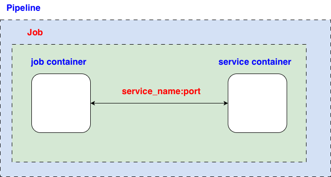

default:
image: alpine:latest
stages:
- test
test_with_redis:
stage: test
services:
- name: redis:7-alpine
alias: redis # alias service hostname, serving as IP of the service container
before_script:
- apk add --no-cache redis
script:
- echo "Testing Redis connection..."
- redis-cli -h redis ping # redis-cli -h redis -p 6379 ping
- redis-cli -h redis set mykey "hello from GitLab CI"
- redis-cli -h redis get mykey